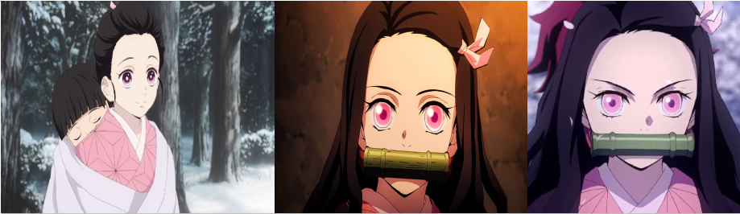

竈門禰豆子
Nezuko Kamado

Bonjour et bienvenus sur cette page ! Ici, vous trouverez toutes sortes d'informations sur Nezuko Kamado, le second protagoniste principale de Demon Slayer. En espérant que les informations ci-dessous vous seront utile, nous vous laissons désormais à la découvertes de cette page !
Qui est Nezuko Kamado ?
Nezuko Kamado est la petite sœur de Tanjiro Kamado et l'une des derniers membres restants de la famille Kamado. Anciennement humaine, elle fut attaquée et transformée en démone par Muzan Kibutsuji. Elle est l'un des personnages principaux de Kimetsu no Yaiba.
Apparence
ezuko est une petite fille à la peau claire, aux crocs proéminents et larges, aux ongles pointus rouges aux bouts. Ses cheveux sont longs, noirs et atteignent sa taille, devenant vermillons à partir de ses coudes, avec une raie sur la gauche. Elle a des yeux rose pâle, plus clairs aux bords de ses iris, aux longs cils, dont les pupilles se fendent lorsqu'elle se transforme.
Elle porte un kimono rose clair à motif feuilles de chanvre, une doublure plus claire, avec un obi à carreaux rouges et blancs et un fil orange attaché autour de sa taille, avec un autre fil vert au dessus de celui-ci. Par dessus, elle porte un long haori marron foncé qui atteint ses genoux, ainsi que des sandales zori roses et des chaussettes blanches, enveloppés par des bandes noires épaisses. Nezuko porte aussi un petit ruban rose sur le coté gauche de sa tête, afin de pouvoir garder ses cheveux hors de son visage, ainsi que le bâillon en bambou que Giyu Tomioka lui a donné, qui tient grâce à un fil rouge autour de sa mâchoire.
Quand Nezuko prend sa forme de démon durant son duel contre Daki, elle perd son bâillon et ses chaussures, ainsi que les manches de son haori et kimono. Elle fait pousser une petite corne blanche sur le coté droit de sa tête, et des veines apparaissent autour de son œil gauche, mais son nouveau trait frappant sont les feuilles vertes et rouges qui couvrent sa peau, circulant autour de ses bras, jambes et poitrine.
En tant qu'humaine, son apparence était très similaire, les seules différences étant son absence de traits de démon, ses cheveux vermillons, et ses yeux roses pales. Elle possédait à la place des cheveux entièrement noirs, attachés en trois chignons bas, décorés par des rubans roses, et des yeux rouges foncés aux bords d'iris roses.
Elle portait le même kimono, cependant sans son haori mais avec un large drap blanc attaché autour d'elle, où elle avait l'habitude de porter son petit frère, Rokuta Kamado, sur son dos.
Personnalité
a personnalité originelle de Nezuko en tant qu'humaine était une fille attentionnée, qui pensait aux autres avant elle comme son grand frère, Tanjiro, et était une sœur responsable avec ses petits frères et sœurs.
Comme démon, cependant, Nezuko semble avoir oublié une bonne partie de ses souvenirs en tant qu'humain, a part ceux reliés à sa famille, et donc n'a pas la même personnalité qu'elle avait avant sa transformation. Elle est toujours très attentionnée et protectrice envers les humains qu'elle voit comme membres de sa famille, malgré le fait que cela soit du à l'influence de Sakonji Urokodaki pendant son sommeil de deux ans. Nezuko possède encore certaines de ses émotions humaines, comme lorsqu'on la voit pleurer quand elle est triste et sourire quand elle est heureuse, mais elle semble en général plus détachée que ses coéquipiers humains, bien que plus calme et moins malicieuse que la plupart des démons.
Depuis sa transformation en démon, Nezuko apparaît plus effrontée, et n'a pas peur de se battre; elle protège férocement son frère ainsi que ses alliés. Elle a aussi développé une forte volonté, comme on peut le voir par son refus de manger de la chair humaine, même dans des cas d'extrêmes blessures ou exposition au sang humain, comme lorsqu'elle refuse Sanemi Shinazugawa alors qu'il la force presque à le mordre avec son sang Marechi.
Dans de rares occasions Nezuko essaie de parler, cependant, elle bégaie beaucoup, ce qui est surement du à son bâillon en bambou rarement enlevé, et le fait qu'elle n'ait pas parlé pendant plusieurs années après sa transformation. Cependant, après avoir développer une résistance au soleil, qui lui permet de sortir et d’interagir avec les autres plus souvent, son articulation s'améliore et elle est capable de prononcer des mots entiers si quelqu'un vient de les prononcer, ou si elle les entend les répéter souvent.
Histoire
Nezuko grandit dans une montagne avec son frère Tanjiro, sa mère et le reste de ses frères et sœurs, en tant que première fille de la famille Kamado. On suppose qu'elle prenait soin de ses petits frères et sœurs, assistant sa mère, comme on peut rapidement le voir avant la mort de sa famille. Contrairement à Tanjiro qui devait vendre du feu de bois en ville, Nezuko aidait souvent sa famille en restant proche de la maison.
La famille était quelque peu pauvre, ainsi Nezuko devait s'abstenir de certaines choses comme de nouveaux vêtement afin de s'assurer que ses frères et sœurs avaient assez de nourriture. Elle ne semblait pas voir cela comme un fardeau, étant heureuse d'aider sa famille.
Aptitudes et compétences
Aptitudes démoniaques
Manipulation de sa taille : Après être transformée en démon, Nezuko put rapidement changer la taille de son corps. Elle est capable de prendre la taille d'un petit enfant afin de rentrer dans une petite boîte ou panier pour se cacher du soleil lorsqu'elle voyage avec Tanjiro et peut aussi se grandir afin de se battre contre des démons.
Restauration de pouvoir : Un trait important de Nezuko en tant que démon est l'aptitude à pouvoir restaurer constamment ses pouvoirs, sans avoir à manger des humains ce qui est la norme pour la plupart des démons. A la place, elle retrouve sa force grâce au sommeil, passant souvent beaucoup de temps dans sa boîte.
Croissance de pouvoir : Nezuko est capable d'être de plus en plus forte sans s'entraîner ou dévorer des humains. Cette aptitude est observée même au milieu d'une bataille et avec des augmentations importantes. Un bon exemple est lors de son duel contre Susamaru ou son pied a été déchiré par l'attaque du démon, mais après régénération elle a été capable de l'affronter dans un match de coups de pieds dans la balle et la surpassant éventuellement. Nezuko devient considérablement plus puissante à travers l'histoire.
Force surdéveloppée : Sans même avoir été entraînée, la force physique naturelle de Nezuko lui permet de se battre facilement contre les démons, cependant, par le fait qu'elle ne soit pas entraînée, elle se repose sur de simples coups envers ses ennemis ou les submerge de force brute à la place. Ses coups lui permettent de couper la tête de démons avec facilité, ou de faire tomber une porte. Sa force est extrêmement importante pour un démon qui n'a jamais mangé d'humains, sa force étant capable d'attendre même celle des Douze Lunes.
Régénération surdéveloppée : Nezuko possède une régénération incroyable qui lui permet de restaurer ses membres en quelques secondes. La vraie nature de cette aptitude est la solidification de son sang des parties de son corps coupées qu'elle peut manipuler comme elle le souhaite. Son pouvoir de régénération est montré durant son duel contre Daki, ou elle régénère ses membres coupés en un instant.
Transformation en démon : Quand Nezuko est dans une situation critique, elle peut se transformer en un état « hors de contrôle », qui apparaît sous la forme de feuilles rouges et vertes circulant sur son corps, ses veines ressortant et une corne sortant du coté droit de son front. Cette forme augmente l'aptitude de Nezuko a se battre, au prix qu'elle ait à devenir plus démon, incluant le besoin de se nourrir de sang humain. Pour l'instant, le seul moyen pour la faire revenir à sa forme normale et d'avoir quelqu'un (dans son cas, Tanjiro) lui chanter une chanson. Durant le duel contre Hantengu, Nezuko arrive à contrôler cette forme à son bon-vouloir.
Résistance au soleil : Durant la bataille contre la Quatrième Lune, Hantengu, Nezuko développe une immunité contre le soleil, étant maintenant capable de sortir complètement la journée sans être brûlée en cendres, comme les autres démons.
Pouvoir Sanguinaire
Nezuko l'éveil pendant son combat contre la Cinquième Lune Inférieure, Rui, après s'être fait piéger dans ses fils et s'être évanouit à la suite d'une perte de sang, puis l'utilise sur les fls de se dernier, elle l'utilise une seconde fois pour guérir les blessure de Tanjiro et Tengen Uzui.son pouvoir consiste à enflammé son sang.
Techniques
Sang Enflammé
Nezuko peut mettre feu à son sang, le transformant en flammes.
Elle est capable de contrôler ses flammes à un état mortel ou non selon sa volonté.
On la voit utiliser son sang pour guérir les blessures des autres si besoin.
Cependant, ces flammes affectent seulement les démons et les pouvoirs des
démons, comme les fils de Rui ou le poison de Gyutaro.
Les flammes de Nezuko sont aussi capables de
changer la couleur noire du katana de Tanjiro en un rouge sang, similaire à la façon dont Yoriichi Tsugikuni
changeait sa lame de noir à rouge avant de se battre, augmentant la force de sa lame contre les démons et permet à
Tanjiro de réaliser la Danse du Dieu de Feu plus efficacement.
Relation
Tanjiro Kamado
Tanjiro est le grand-frère de Nezuko et le dernier membre vivant de sa famille. Ainsi, alors que Nezuko est normalement calme et adorable, elle devient enragée et attaque n'importe quel démon blessant Tanjiro. Etant les seuls survivants de leur pauvre famille, ils sont tous les deux très proches, ayant confiance l'un en l'autre, et se portant un amour fraternel fort. Il est surement le seul capable de calmer rapidement Nezuko en l'appelant ou lui chantant la berceuse de leur mère.
Zenitsu Agatsuma
Zenitsu tombe amoureux de Nezuko au premier regard. Selon le databook, elle le voit comme un "pissenlit bizarre". Même si on les voit rarement interagir, Zenitsu traite Nezuko affectueusement.
Malgré sa lâcheté, Zenitsu eut le courage de rentrer dans la Montagne Natagumo en réalisant que Tanjiro avait emmené Nezuko avec lui dans le territoire de la Famille d'Araignées, ayant l'intention de la protéger. Lors de leur entraînement de récupération, Zenitsu lui racontait des histoires sur Tanjiro et leurs missions alors qu'elle se trouvait dans sa boîte, ce à quoi elle répondait en bougeant simplement la boîte, insinuant qu'elle était heureuse de l'écouter.
Quand Nezuko retrouve son humanité, elle commence à se remémorer sa vie en tant que démon et en particulier, un souvenir dans lequel Zenitsu lui offre des fleurs, prouvant qu'elle le voit d'un bon œil.
Yushiro
Au début, Nezuko se sentait menacée par la présence de Yushiro, sentant qu'il était un démon. Cependant, après avoir vu qu'il n'avait aucune mauvaise intention vers elle ou Tanjiro, elle ne le vit plus comme une menace et arrête d'être vigilante autour de lui.
Plus tard, après leur combat contre le démon aux ballons et le démon aux flèches, elle voit Yushiro comme un de ses petits frères, et caresse sa tête, malgré sa consternation.
Merci à vous d'avoir visitez ce site, et plus particulièrement cette page, en espérant que celle-ci vous aura été utile !
さようなら ！
AU REVOIR !